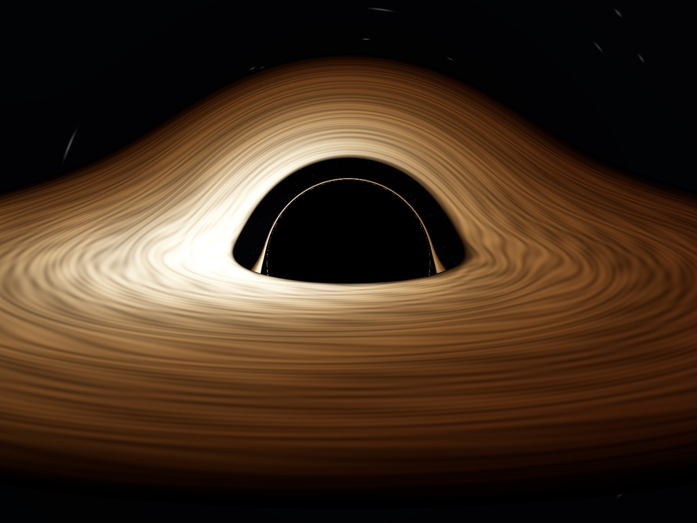

长度单位 rg = GM/c²，临界值为 3√3 ≈ 5.196。实线圆是事件视界，虚线圆是光子球。
公开项目
关于我
在 GitHub 上找到我我想看清模型里的信息怎么传播，也希望一轮实验的结论能追溯到实际执行。形式化证明和可复查的实验记录，分别帮我检查这两类工作。

长度单位 rg = GM/c²，临界值为 3√3 ≈ 5.196。实线圆是事件视界，虚线圆是光子球。
我想看清模型里的信息怎么传播，也希望一轮实验的结论能追溯到实际执行。形式化证明和可复查的实验记录，分别帮我检查这两类工作。